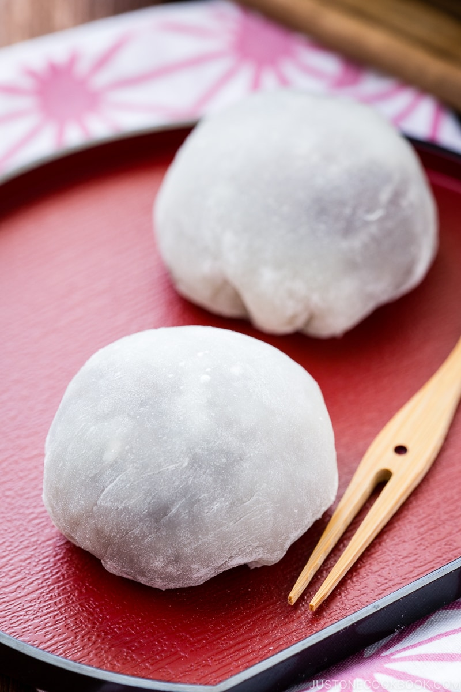

Mochi

Daifuku (大福) or Daifuku Mochi (大福餅) is a type of wagashi (和菓子), Japanese sweets. It’s a small round mochi stuffed with anko (sweetened red bean paste) made from azuki beans. Daifuku is a popular Japanese snack and usually served with green tea.
Ingredients
- ¾ cup shiratamako (glutinous rice flour/sweet rice flour) (or use mochiko; see the measurement below)
- ¾ cup water
- ¼ cup sugar (do not omit the sugar as it helps the mochi stay softer)
- ½ cup potato starch or cornstarch
- 1½ cup red bean paste (anko)
Instructions
- Gather all the ingredients
- Combine the shiratamako and sugar in a medium bowl and whisk it all together.
- Add the water and mix well until combined.